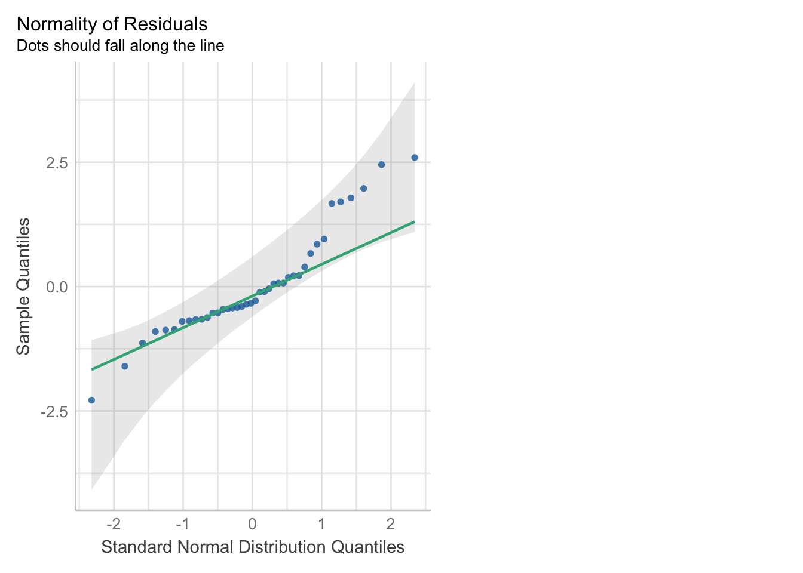

Workshop 10 Reproducing the computational environment
Congratulations on making it to the last workshop in this unit! This week’s content is not assessed but covers an important topic, and one that you will find useful for your future R scripts.
R is a very useful tool when it comes to reproducibility. Because the software is open source and free it is easy to share your analysis scripts with others so that they can reproduce them. However there are some pitfalls we need to be aware of.
10.1 Package updates
Package updates are a major obstacle when it comes to make reproducible R scripts. Packages are constantly being updated and when you install one you will get the latest version. If someone shares a script with you that was written using an older version of a package than you have installed, there is no guarantee that it will produce the same results (or even work at all).
In fact we have already encountered this problem in workshop 6 on regression. The script shown in Andrew’s video uses an older version of the performance package, and as a result the normality of residuals plot looked different for many of you because you were using the latest version of the package. Below is the plot that the current version of the package produces, and that many of you saw.
One solution is a package called groundhog. Groundhog allows you to specify a date when you load a package. Then, instead of using the latest version of the package installed on your computer, it will use the version that was current on the date you specify.
The main purpose of the package is to future-proof scripts that you write. You simply load your packages via the groundhog function groundhog.library(). So instead of library(Hmisc) you would write groundhog.library('Hmisc','2023-12-01').
The other way you can use groundhog is to revive old scripts that no longer work. If we know roughly when they were written we can load the packages in the script using that historical date.
Let’s apply groundhog to our regression workshop problem. Here are the key bits of code from the workshop. But I will use groundhog to load an earlier version of the performance package by specifying the date 20 November 2022. The tolerate.R.version parameter tells groundhog that I want to use my current version of R. I should really install an older version that was current in November 2022, but it’s not necessary for this example.
library(tidyverse)
library(groundhog)
groundhog.library('performance', '2022-11-20',tolerate.R.version='4.3.2')
crime <- read_csv("https://raw.githubusercontent.com/ajstewartlang/09_glm_regression_pt1/master/data/crime_dataset.csv")
crime_tidied <- crime %>%
separate(col = "City, State", into = c("City", "State")) %>%
rename(House_price = index_nsa) %>%
rename(Violent_Crimes = "Violent Crimes")
crime_filtered <- filter(crime_tidied, Population < 2000000)
crime_filtered <- filter(crime_filtered, Year == 2015)
model2 <- lm(Violent_Crimes ~ Population, data = crime_filtered)
check_model(model2, check = c("qq"))
Now we see the same version of the plot that appeared in Andrew’s video. This is a fairly trivial example, however, the problem can be a serious one. Ana Trisovic and colleagues attempted to run over 2000 R scripts that had been published alongside academic papers. Less than half ran without errors, and a substantial proportion of errors were package related.
10.1.1 A word of warning
I do not recommend you immediately start using groundhog in all your scripts. There are a few reasons for this: Firstly, new versions of packages are generally better than their predecessors, so you might just want to update your script when things change or go wrong as a result of a package update. Second, there are some technical problems you might run into. For example, groundhog will download and install the necessary historical packages which can be a time-consuming process. It is also possible that an old version of a package will require an old version of R. In that case the future user would need to install the old version of R too. This is perfectly possible but slightly technical and time-consuming.
You do not need to use groundhog in your upcoming assignment.
You should use groundhog when you have finished working on a script and there are no more edits to make. And that script needs to be reproducible in the future (perhaps because it produces an analysis or figure in a scientific journal).
10.1.2 Alternatives
Groundhog is the not the only tool you can use to overcome these issues, but it is probably the simplest. There are other packages that do a similar job such as renv. There are also tools like Binder that allow others to interact with your script via a browser hosting an Rstudio session that precisely mimics the environment that was operating when you originally wrote your script.
10.2 Randomness
There is another potential challenge to making R scripts reproducible - randomness. Often it is necessary to conduct simulations in R. Simulations are used for lots of reasons including power analyses where we simulate the data we plan to collect.
Here’s an example where we take a random sample of 10 values from a normal distribution with mean 100 and standard deviation of 50. We then calculate the mean of the sample:
## [1] 110.7293Now let’s run the same code again:
## [1] 89.69045The nature of randomness means we will get a different number each time. A solution to this is to set a seed value. Lets run the code again but set a seed.
## [1] 127.3648and again:
## [1] 127.3648Now we get the same value each time, solving the problem. Note that it is not generally necessary to set the seed value if you are not concerned with precisely replicating a script.
To conclude, we’ve looked at two relatively simple things you can do to improve the reproducibility of your code: Use the groundhog package to specify the date when you wrote your code. Second, consider using the set.seed() function if you have a script involving randomness that you would like to be able to reproduce precisely.